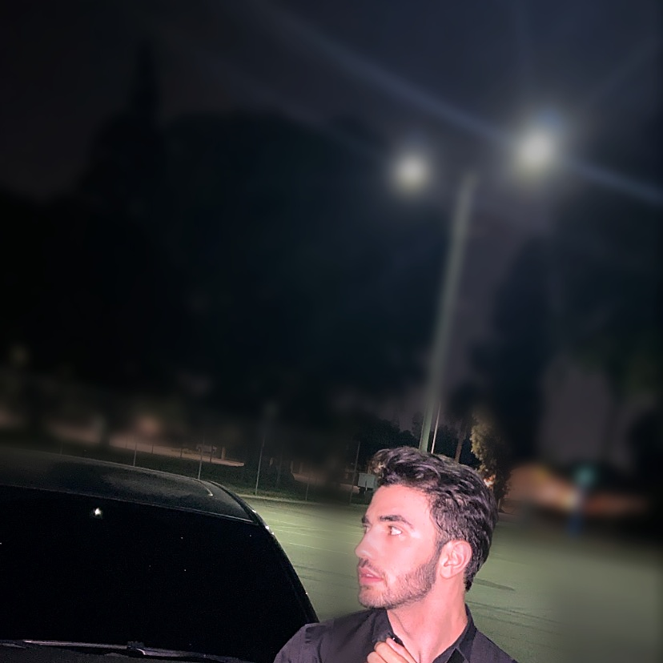

Opportunity Class 01
AI Tools & Platforms
Opportunity Class 02

Apple leaks. iPhone news. iOS updates. With a dash of personality.
Companies too large for a cold email — apply directly instead. Tap a card's link to open their program, tap Copy pitch to grab a ready-made message. This page refreshes itself every morning at 9am with fresh research.